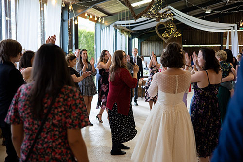

Gallery


Juniper has multiple years of experience in the wedding scene and will make it our priority to
provide a ceilidh suited to your needs. You can also customise the size of the band dependant on your budget.
The band and callers are flexible professional musicians from around the UK who will give an excellent standard of music for your event.
You can even hire our PA system for the evening to dance to all your favourite songs.
Just make sure to provide us a set list in time to get a playlist together for you.
Ceilidhs are a perfect addition to any Birthday/event and with Juniper you will be dancing the night (or day) away!
No matter how much or little experience you have with Ceilidhs Juniper will be able to get the most out of your evening
with our incredible callers and musicians that know how to get anyone moving.
With countless Ceilidh's under there belt including at Purbeck Valley Folk Festival, Juniper make sure to provide an excellent standard of service for your event.
Web Design © 2024 Chris Roberts